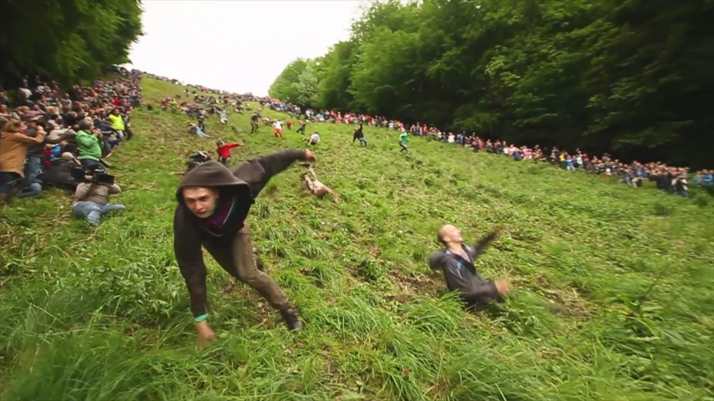

''I had some cheese on toast to get in the zone''
- Nathan 'Mangos' Anstey
Cheese Rolling
What is cheese rolling?
 It's pretty simple – a nine pound round of Double Gloucester cheese is moved from the highest point of the slope and contenders pursue it down to the base. The principal individual over the end goal is delegated victor, with the cheese as their prize. Initially, the point was to get the cheese, nonetheless, with its one-second head start and how rapidly it picks up speed, this turns out to be really troublesome – and perilous! Before, onlookers have been harmed by the moving cheese, and in 2013 the cheese was supplanted with a foam copy for safety reasons.
Where does it occur?
The occasion happens on Cooper's Hill, in the ward of Brockworth, Gloucester. The fundamental contenders are local people from the town, notwithstanding, individuals have come from everywhere the world to participate in the irregular game. There's even a bar in the neighboring town of Shurdington named after the occasion called The Cheese Rollers, where the challengers visit for a touch of Dutch mental fortitude before the occasion, and to celebrate after it.
History
It is believed this odd sport was created in the 15th century. It is also believed it might be of pagan origin. Apparently, bundles of burning brushwood were rolled down the hill to signify the New Year. Each year, the occasion turns out to be increasingly mainstream, with challengers coming from all over the world to contend, or even essentially to watch.
Injuries
WEIRDLY, a lot of people get hurt every year!
The main factor being the steepness and uneven surface of Cooper's Hill. Willing volunteers act as 'catchers' for participants who lose their footing.
Various emergency vehicle vehicles go to the occasion, since there is perpetually in any event one and regularly a few wounds requiring medical clinic therapy.